如果没有安装过svn客户端,安装的时候需要选择安装第二个工具,如下图所示
安装小乌龟, 自行搜索, 注意点是需要选择安装第二个工具
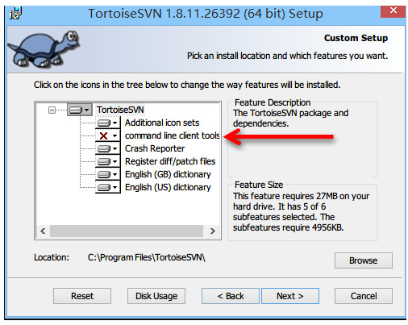
因为默认是不安装的, 而这个组件是集成到IDEA ”必须的” .
如果是已经安装好的, 但是没有选这个的也是有办法的
办法一: 更改小乌龟
在卸载小乌龟的过程中会有这个页面
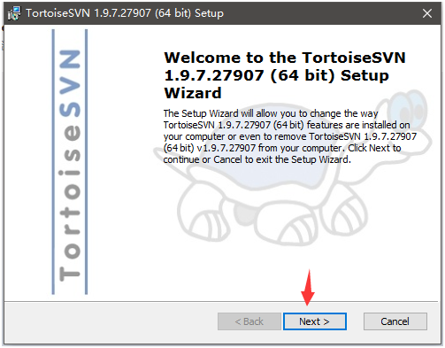
然后
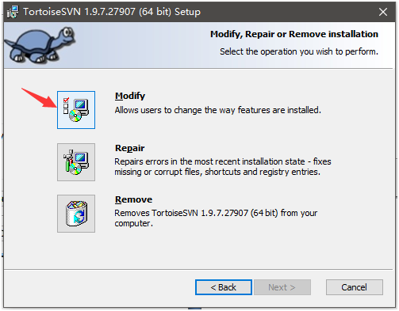
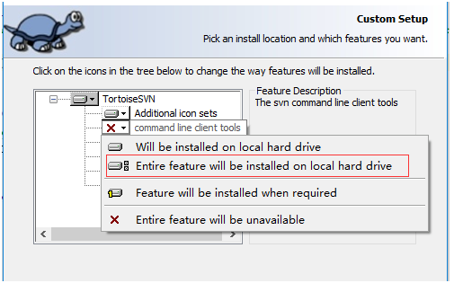
选择后一路next就行了, 如果不报错的话.
方法二: 修改IDEA
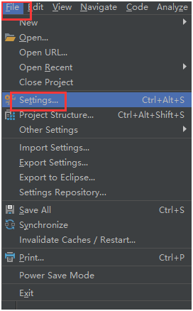
然后apply --> ok 就行了
以上是idea通过svn拉取代码的方法, 接下来就是使用idea拉代码,集成svn到IDEA
注意: 由于我的是没有安装 command line client tools, 所以接下来就是使用方法二 修改IDEA达到集成svn的条件下导入svn项目
第一步: 打开一个已有项目的IDEA ,找到svn
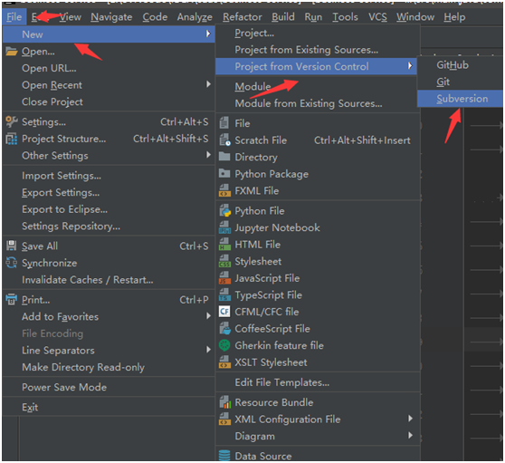
第二步: 打开后,点击绿色加号,添加项目地址, 然后checkout即可
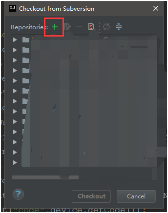
选择代码存在哪
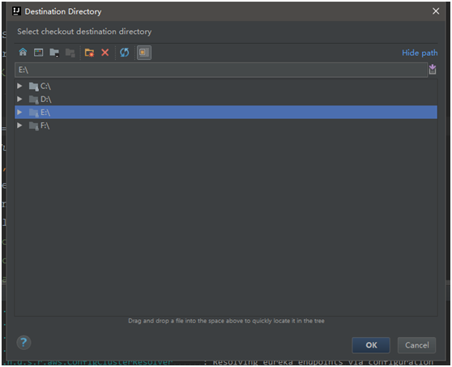
会有三个目录格式选择, 一般选择中间长度的, 在当前文件夹下生成一个以模块名命名的文件夹存放代码
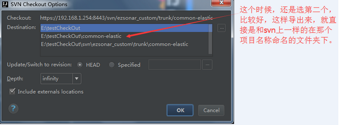
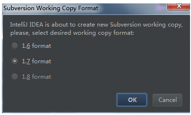
这样, 一个模块就下好了, 然后重复第一,第二步, 将所有需要的模块都拉下来
注意: 每次拉模块IDEA都会将模块单独打开, 代码拉下来后直接将打开的模块关掉即可,记得保留一个, 一会用来导入其他模块,完成项目导入
第三步: 导入IDEA
打开刚才保留的一个项目,然后在settings页面去掉svn的勾选
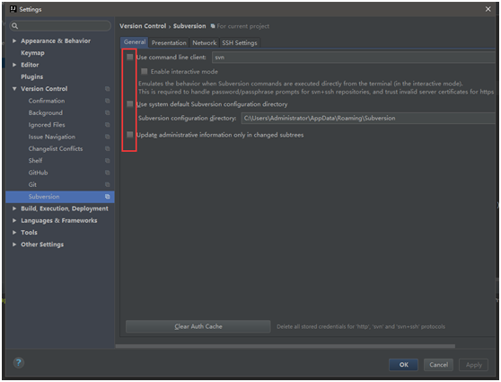
最后就是导入模块了
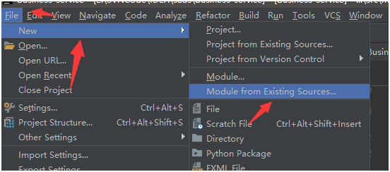
然后找到想要导入的模块的pom文件,双击pom文件,一路next就行了
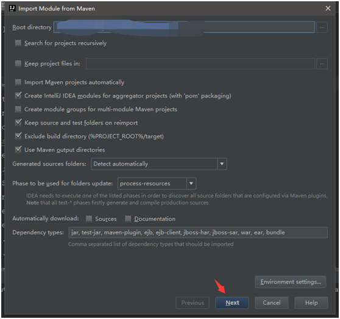
重复以上导入步骤,直到导入所有所需模块即可
有些IDEA上使用svn的说明可以参考:https://blog.csdn.net/qq_27093465/article/details/74898489